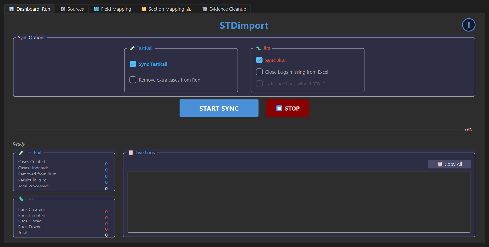
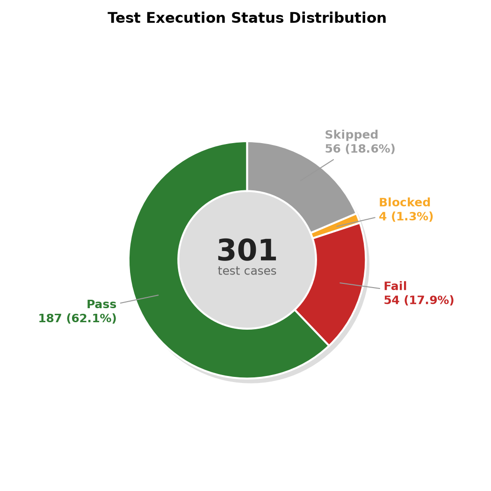
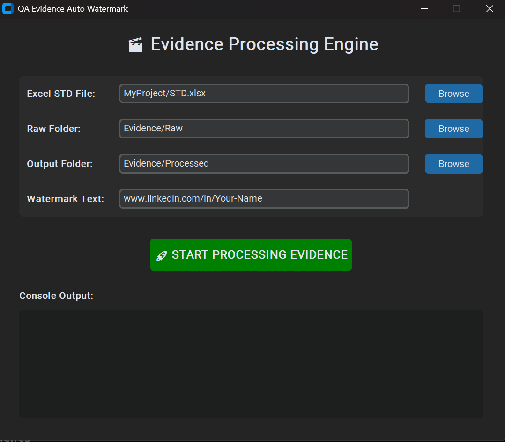
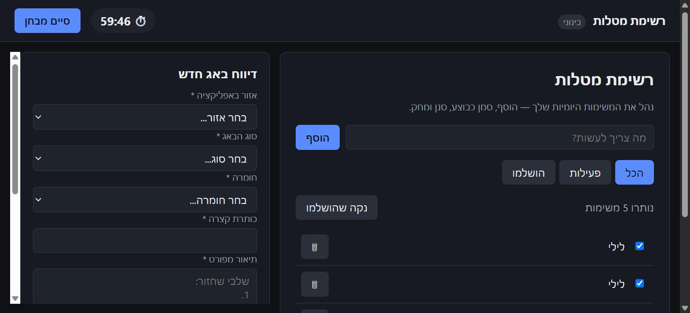

STDimport
PrivateSyncs a QA results spreadsheet with Jira + TestRail in both directions — creates/updates/closes bugs, upserts test cases, uploads evidence.
View write-up →QA & Automation Engineer
Jira/TestRail sync, report generation, evidence processing, and full-stack apps — most live in private repos. This page collects real screenshots, architecture, and write-ups for each one in a single place.
Each card links to a full write-up — features, architecture, and real screenshots where source is kept private.

Syncs a QA results spreadsheet with Jira + TestRail in both directions — creates/updates/closes bugs, upserts test cases, uploads evidence.
View write-up →
Generates a full Software Test Report (.docx) from a results spreadsheet + a live Jira pull — charts, color-coded tables, per-defect pages.
View write-up →
Stamps bug screenshots/videos with metadata pulled automatically from a QA results spreadsheet — no more manual annotation.
View repo →
A manual-QA training simulator — five apps seeded with real bugs, a one-hour timer, a bug-report panel, and a scored breakdown at the end.
View write-up →Desktop UI to manage which folders Claude Code / Claude Desktop are allowed to access, without hand-editing JSON.
View repo →Full-stack nutrition/fitness tracker — meal photo & voice logging via Claude, macro targets, an AI coaching chat.
View write-up →A daily AI interview-prep coach, driven from a Claude Code skill, that tracks technique coverage and progress over time.
View write-up →QA & Automation Engineer who keeps ending up building the tool instead of just doing the task by hand — a Jira/TestRail sync script, a report generator, an evidence watermarker — because the manual version doesn't scale past the first project. Most of it lives in private repos (client data, real credentials scaffolding, or just not cleaned up for a public read), so this page exists to show the real thing anyway: actual screenshots, real architecture, no filler.